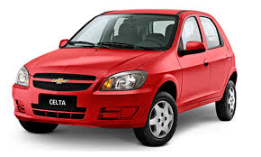
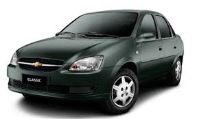
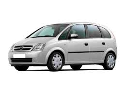

Carros da GM 2011
GM Celta 2011

R$ 21.209,00
O Celta 2011 é um carro compacto da GM, conhecido por sua economia de combustível e design prático.
Veja a sua ficha técnica
- Motor: 1.0 VHCE (Flex).
- Câmbio: Manual de 5 marchas.
- Consumo:
- Cidade: 9,8 km/l.
- Estrada: 12,2 km/l.
- Suspensão:
- Dianteira: McPherson.
- Traseira: Eixo de torção.
- Freios:
- Tração: Dianteira.
GM Corsa 2011

R$ 28.123,00
O Corsa 2011 é um hatchback popular, oferecendo conforto e eficiência para o dia a dia.
Veja a sua ficha técnica
- Motor: 1.4 8 válvulas (Flex).
- Câmbio: Manual de 5 marchas.
- Consumo:
- Cidade: 10,2 km/l.
- Estrada: 12,8 km/l.
- Suspensão:
- Dianteira: McPherson.
- Traseira: Eixo de torção.
- Freios:
- Tração: Dianteira.
GM Meriva 2011

R$ 28.485,00
A Meriva 2011 é uma minivan versátil, ideal para famílias, com amplo espaço interno e conforto.
Veja a sua ficha técnica
- Motor: 1.4 8 válvulas (Flex).
- Câmbio: Manual de 5 marchas.
- Consumo:
- Cidade: 9,3 km/l.
- Estrada: 10,9 km/l.
- Suspensão:
- Dianteira: McPherson.
- Traseira: Eixo de torção.
- Freios:
- Tração: Dianteira.
Próxima página